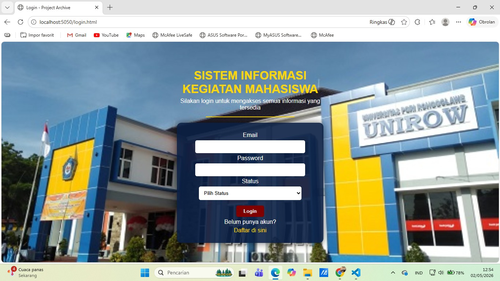

Sistem Informasi Kegiatan Mahasiswa
Proyek pembuatan sistem informasi berbasis web menggunakan PHP dan MySQL yang saling terhubung sebagai bagian dari pembelajaran pemrograman web.

Deskripsi Proyek
Sistem Informasi Kegiatan Mahasiswa merupakan proyek pengembangan aplikasi berbasis web. Proyek ini dibuat menggunakan PHP sebagai bahasa pemrograman dan MySQL sebagai basis data yang saling terhubung untuk mendukung pengelolaan data pada aplikasi.
Tujuan Proyek
Tujuan pembuatan proyek ini adalah menerapkan materi pemrograman web serta memahami proses pengembangan aplikasi menggunakan PHP dan hubungan antara aplikasi dengan basis data MySQL.
Proses Pengerjaan
Proses pengerjaan dilakukan dengan menyusun halaman aplikasi, membuat kode program menggunakan PHP, kemudian menghubungkan aplikasi dengan database MySQL. Setelah itu, dilakukan pengujian untuk memastikan koneksi antara aplikasi dan database dapat berjalan dengan baik.
Tools dan Teknologi
Hasil dan Pembelajaran
Hasil dari proyek ini adalah sebuah aplikasi sistem informasi berbasis web yang menggunakan PHP dan terhubung dengan database MySQL. Melalui proyek ini, saya memperoleh pemahaman mengenai penggunaan PHP, pengelolaan basis data, serta proses menghubungkan aplikasi dengan database.